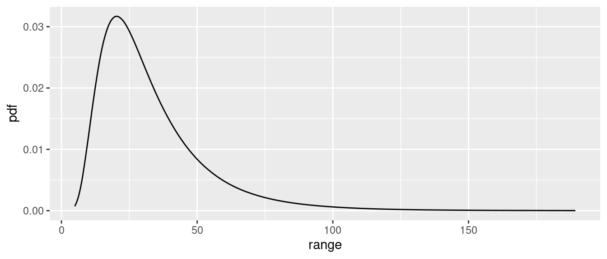
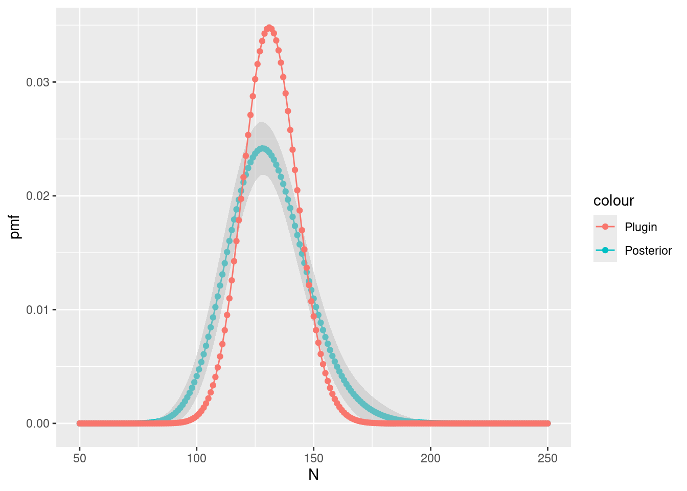
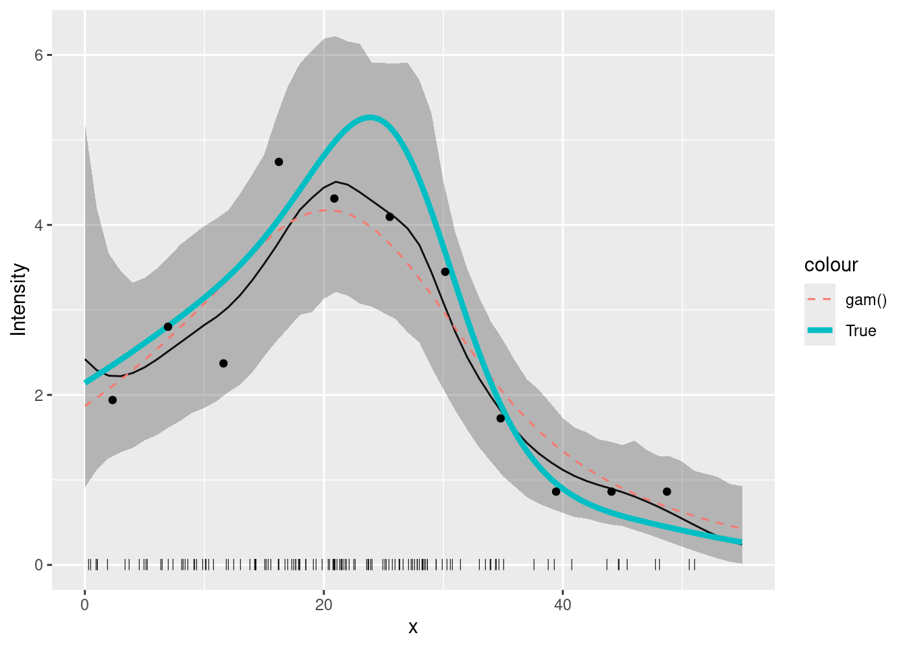

LGCPs - An example in one dimension
David Borchers and Finn Lindgren
Generated on 2024-09-20
Source:vignettes/articles/1d_lgcp.Rmd
1d_lgcp.RmdIntroduction
In this vignette we are going to see how to fit an SPDE to one-dimensional point data, i.e. data that consist of the points at which things are located, not the number of points in some area.
Get the data
data(Poisson2_1D, package = "inlabru")Take a look at the point (and frequency) data
ggplot(pts2) +
geom_histogram(aes(x = x),
binwidth = 55 / 20,
boundary = 0, fill = NA, color = "black"
) +
geom_point(aes(x), y = 0, pch = "|", cex = 4) +
coord_fixed(ratio = 1)
Fiting the model
Build a 1D mesh:
x <- seq(0, 55, length.out = 50)
mesh1D <- fm_mesh_1d(x, boundary = "free")Make the latent components for a 1D SPDE model, using an integrate-to-zero constraint for better identifiability:
matern <- inla.spde2.pcmatern(mesh1D,
prior.range = c(150, 0.75),
prior.sigma = c(0.1, 0.75),
constr = TRUE
)
comp <- ~ spde1D(x, model = matern) + Intercept(1)Here we want to fit to the actual points, and the
inlabru functions that are used for this are
bru() and like(..., family = "cp"). For this
special case there is also a shortcut function lgcp() (for
‘Log Gaussian Cox Process’), but it doesn’t support all features. The
standard way of specifying the function space for integration is via the
domain argument.
fit.spde <- bru(
comp,
like(x ~ ., family = "cp", data = pts2, domain = list(x = mesh1D))
)
## Equivalent call for this particular example:
# fit.spde <- lgcp(comp, formula = x ~ ., data = pts2, domain = list(x = mesh1D))Here, formula = x ~ . means that the observed points are
in x, and . denotes a linear predictor that is
the sum of all the latent components.
SPDE parameters
We can look at the posterior distributions of the parameters of the
SPDE using the function spde.posterior. It returns
x and y values for a plot of the posterior PDF
in a data frame, which can be printed using the plot
function. To see the PDF for the range parameter, for example:
post.range <- spde.posterior(fit.spde, name = "spde1D", what = "range")
plot(post.range)
Look at the help file for spde.posterior and then plot
the posterior for the log of the SPDE range parameter, the SPDE variance
and/or log of the variance, and for the Matern covariance function. Make
sure you understand the difference between what is plotted for the range
and variance parameters, and for the covariance function (which involves
both these parameters).
post.log.range <- spde.posterior(fit.spde, name = "spde1D", what = "log.range")
plot(post.log.range) # SOLUTION
post.variance <- spde.posterior(fit.spde, name = "spde1D", what = "variance")
plot(post.variance) # SOLUTION
post.log.variance <- spde.posterior(fit.spde, name = "spde1D", what = "log.variance")
plot(post.log.variance) # SOLUTION
post.matcorr <- spde.posterior(fit.spde, name = "spde1D", what = "matern.correlation")
plot(post.matcorr) # SOLUTIONYou can get a feel for sensitivity to priors by specifying different priors and looking at the posterior plots.
Predicting intensity
We can also now predict on any scale we want. For example, to predict
on the ‘response’ scale (i.e. the intensity function
),
we call predict thus:
predf <- data.frame(x = seq(0, 55, by = 1)) # Set up a data frame of explanatory values at which to predict
pred_spde <- predict(fit.spde, predf, ~ exp(spde1D + Intercept), n.samples = 1000)while to predict on the linear predictor scale (i.e. that of the log
intensity,
),
we call predict thus:
pred_spde_lp <- predict(fit.spde, predf, ~ spde1D + Intercept, n.samples = 1000)here’s how to plot the prediction and 95% credible interval:
plot(pred_spde, color = "red") +
geom_point(data = pts2, aes(x = x), y = 0, pch = "|", cex = 2) +
xlab("x") + ylab("Intensity")
How does this compare with the underlying intensity function that
generated the data? The function lambda2_1D( ) in the
dataset Poission2_1D calculates the true intensity that was
used in simulating these data. In order to plot this, we make a data
frame with x- and y-coordinates giving the
true intensity function,
.
We use lots of x-values to get a nice smooth plot (150
values).
xs <- seq(0, 55, length = 150)
true.lambda <- data.frame(x = xs, y = lambda2_1D(xs))Plot the fitted and true intensity functions:
Goodness-of-Fit
We can look at the goodness-of-fit of the mode using the
inlabru function bincount( ), which plots the
95% credible intervals in a specified set of bins along the
x-axis together with the observed count in each bin: The
credible intervals are shown as red rectangles, the mean fitted value as
a short horizontal blue line, and the observed data as black points:
bc <- bincount(
result = fit.spde,
observations = pts2,
breaks = seq(0, max(pts2), length = 12),
predictor = x ~ exp(spde1D + Intercept)
)
attributes(bc)$ggp
Estimating Abundance
Abundance is the integral of the intensity over space. We estimate it
by integrating the predicted intensity over x. Integration
is done by adding up the intensity at locations x weighted
by a particular weight. The locations x and their weights
are constructed using the fm_int function
ips <- fm_int(mesh1D, name = "x")
head(ips)
#> x weight .block
#> 1 0.000000 0.1870748 1
#> 2 1.122449 0.3741497 1
#> 3 2.244898 0.3741497 1
#> 4 3.367347 0.3741497 1
#> 5 4.489796 0.3741497 1
#> 6 5.612245 0.3741497 1
Lambda <- predict(fit.spde, ips, ~ sum(weight * exp(spde1D + Intercept)))You can look at the abundance estimate by typing
Lambda
#> mean sd q0.025 q0.5 q0.975 median sd.mc_std_err mean.mc_std_err
#> 1 129.937 10.9137 109.3099 130.6456 149.052 130.6456 0.6373324 1.218836-
meanis the posterior mean abundance. -
sdis the estimated standard error of the posterior of the abundance. -
cvis its estimated coefficient of variation (stander error divided by mean). -
q0.025andq0.975are the 95% credible interval bounds. -
q0.5is the posterior median abundance
But it is not quite that simple! The above posterior for abundance
takes account only of the variance due to us not knowing the parameters
of the intensity function. It neglects the variance in the number of
point locations, given the intensity function. To include this we need
to modify predict( ) as follows:
Nest <- predict(
fit.spde, ips,
~ data.frame(
N = 50:250,
dpois = dpois(50:250,
lambda = sum(weight * exp(spde1D + Intercept))
)
)
)This calculates the same statistics as were calculated for
Lambda, but for evey value of N from 50 to
250, rather than for the posterior mean N alone:
Nest[Nest$N %in% 100:105, ]
#> N mean sd q0.025 q0.5 q0.975 median sd.mc_std_err
#> 51 100 0.005815249 0.009738214 1.846461e-06 0.0009390488 0.03565851 0.0009390488 0.0011937177
#> 52 101 0.006451600 0.010206101 2.770375e-06 0.0012080058 0.03699825 0.0012080058 0.0011708963
#> 53 102 0.007123368 0.010630567 4.115862e-06 0.0015387648 0.03801197 0.0015387648 0.0011344282
#> 54 103 0.007829110 0.011009557 6.055483e-06 0.0019410628 0.03843581 0.0019410628 0.0010853908
#> 55 104 0.008567009 0.011342427 8.823552e-06 0.0024250013 0.03868935 0.0024250013 0.0010255663
#> 56 105 0.009334850 0.011629757 1.273459e-05 0.0030007485 0.03881471 0.0030007485 0.0009574735
#> mean.mc_std_err
#> 51 0.001212565
#> 52 0.001254789
#> 53 0.001289942
#> 54 0.001318034
#> 55 0.001339356
#> 56 0.001354470We compute the 95% prediction interval and the median as follows
inla.qmarginal(c(0.025, 0.5, 0.975), marginal = list(x = Nest$N, y = Nest$mean))
#> [1] 96.74774 128.08411 162.67706Compare Lambda to Nest by plotting: First
calculate the posterior conditional on the mean of
Lambda
Nest$plugin_estimate <- dpois(Nest$N, lambda = Lambda$mean)Then plot it and the unconditional posterior
ggplot(data = Nest) +
geom_point(aes(x = N, y = mean, colour = "Posterior")) +
geom_line(aes(x = N, y = mean, colour = "Posterior")) +
geom_ribbon(
aes(
x = N,
ymin = mean - 2 * mean.mc_std_err,
ymax = mean + 2 * mean.mc_std_err
),
fill = "grey",
alpha = 0.5
) +
geom_point(aes(x = N, y = plugin_estimate, colour = "Plugin")) +
geom_line(aes(x = N, y = plugin_estimate, colour = "Plugin")) +
ylab("pmf")
Do the differences make sense to you?
Comparison to GAM fit
Now refit a GAM for the count data of Poisson2_1D and
plot the estimated intensity function from this GAM fit, together with
the LGCP fitted above and the true intensity.
cd2 <- countdata2
fit2.gam <- gam(count ~ s(x, k = 10) + offset(log(exposure)), family = poisson(), data = cd2)
dat4pred <- data.frame(x = seq(0, 55, length = 100), exposure = rep(cd2$exposure[1], 100))
pred2.gam <- predict(fit2.gam, newdata = dat4pred, type = "response")
dat4pred2 <- cbind(dat4pred, gam = pred2.gam) # SOLUTIONYou should get a plot like this (thick line is the true intensity, the thin solid line the inlabru fit, the dashed line the GAM fit:
plot(pred_spde) +
geom_point(data = pts2, aes(x = x), y = 0, pch = "|", cex = 2) +
geom_line(data = dat4pred2, aes(x, gam / exposure, colour = "gam()"), lty = 2) +
geom_line(data = true.lambda, aes(x, y, colour = "True"), lwd = 1.5) +
geom_point(data = cd2, aes(x, y = count / exposure)) +
ylab("Intensity") + xlab("x") # SOLUTION